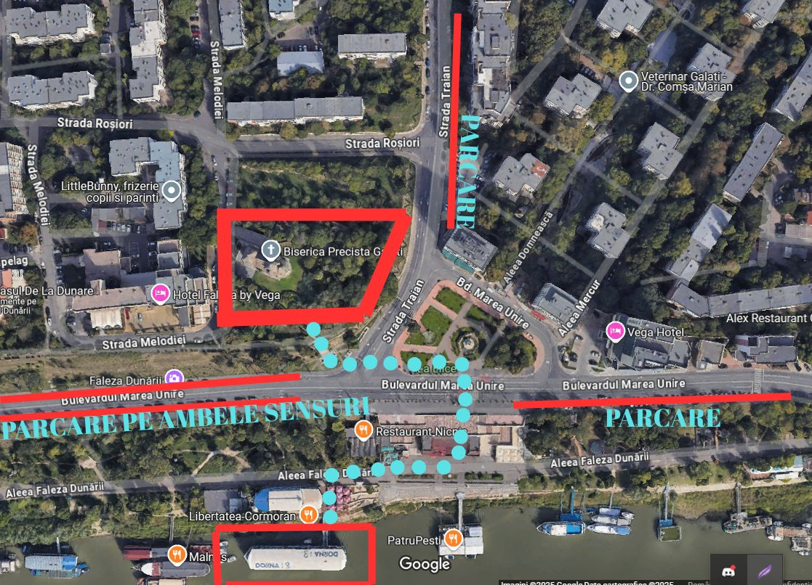

Corina-Ionelia & Laurian
14 iunie 2025
Programul zilei
Gătitul mirelui
Ora: 10:00
Gătitul nașilor
Ora: 11:30
Gătitul miresei
Ora: 12:00
Starea Civilă
Ora: 15:00
Locuri de parcare

Biserica Precista
Ora: 17:00
Locuri de parcare

Petrecerea - Cormoran
Ora: 20:00